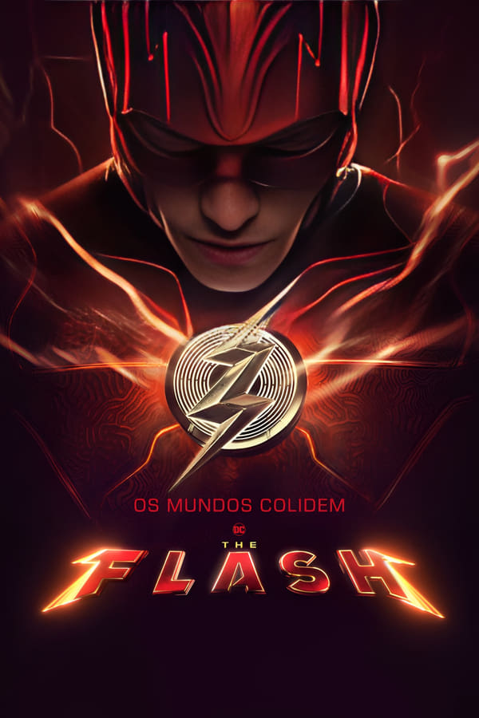
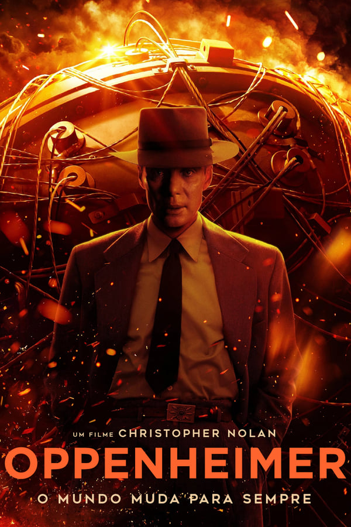

Megatubarão 2
Um mergulho exploratório nas profundezas do oceano de uma ousada equipe de pesquisa se transforma em caos quando uma operação de mineração malévola ameaça sua missão e os força a uma batalha de alto risco pela sobrevivência.

The Flash
Quando Barry usa seus superpoderes para viajar no tempo e mudar os eventos do passado. Mas quando tenta salvar sua família e acaba, sem querer, alterando o futuro, Barry fica preso em uma realidade na qual o General Zod está de volta, ameaçando colocar o mundo em risco, e não há super-heróis a quem recorrer.

Oppenheimer
A história do físico americano J. Robert Oppenheimer, seu papel no Projeto Manhattan e no desenvolvimento da bomba atômica durante a Segunda Guerra Mundial, e o quanto isso mudaria a história do mundo para sempre.

Homem-Aranha: Sem Volta Para Casa
Peter Parker é desmascarado e não consegue mais separar sua vida normal dos grandes riscos de ser um super-herói. Quando ele pede ajuda ao Doutor Estranho, os riscos se tornam ainda mais perigosos, e o forçam a descobrir o que realmente significa ser o Homem-Aranha...